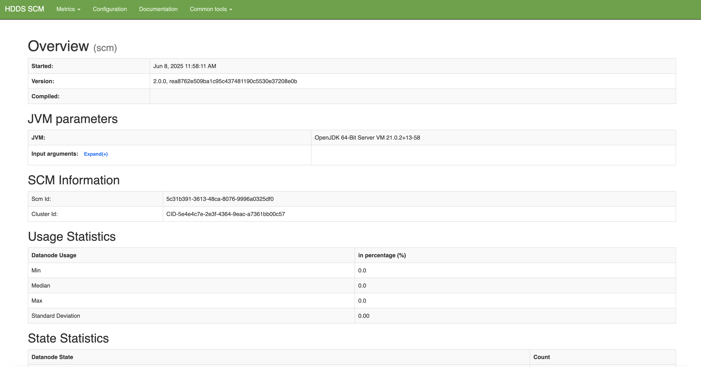
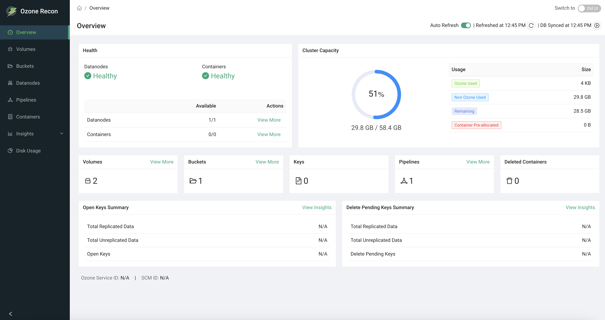

Simple Single Ozone
- Working docker setup
- AWS CLI (optional)
Local multi-container cluster
Obtain the Docker Compose Configuration
First, obtain Ozone’s sample Docker Compose configuration:
# Download the latest Docker Compose configuration file
curl -O https://raw.githubusercontent.com/apache/ozone-docker/refs/heads/latest/docker-compose.yaml
Start the Cluster
Start your Ozone cluster with three Datanodes using the following command:
docker compose up -d --scale datanode=3
This command will:
- Automatically pull required images from Docker Hub
- Create a multi-node cluster with the core Ozone services
- Start all components in detached mode
Verify the Deployment
Check the status of your Ozone cluster components:
docker compose ps
You should see output similar to this:
docker-datanode-1 apache/ozone:2.0.0 "/usr/local/bin/dumb…" datanode 14 seconds ago Up 13 seconds 0.0.0.0:32958->9864/tcp, :::32958->9864/tcp
docker-datanode-2 apache/ozone:2.0.0 "/usr/local/bin/dumb…" datanode 14 seconds ago Up 13 seconds 0.0.0.0:32957->9864/tcp, :::32957->9864/tcp
docker-datanode-3 apache/ozone:2.0.0 "/usr/local/bin/dumb…" datanode 14 seconds ago Up 12 seconds 0.0.0.0:32959->9864/tcp, :::32959->9864/tcp
docker-om-1 apache/ozone:2.0.0 "/usr/local/bin/dumb…" om 14 seconds ago Up 13 seconds 0.0.0.0:9874->9874/tcp, :::9874->9874/tcp
docker-recon-1 apache/ozone:2.0.0 "/usr/local/bin/dumb…" recon 14 seconds ago Up 13 seconds 0.0.0.0:9888->9888/tcp, :::9888->9888/tcp
docker-s3g-1 apache/ozone:2.0.0 "/usr/local/bin/dumb…" s3g 14 seconds ago Up 13 seconds 0.0.0.0:9878->9878/tcp, :::9878->9878/tcp
docker-scm-1 apache/ozone:2.0.0 "/usr/local/bin/dumb…" scm 14 seconds ago Up 13 seconds 0.0.0.0:9876->9876/tcp, :::9876->9876/tcp
Check the Ozone version
docker compose exec om ozone version
Once the cluster is booted up and ready, you can verify its status by connecting to the SCM’s UI at http://localhost:9876.

Navigate to the Recon server home page. The Ozone Recon server is at http://localhost:9888, which provides monitoring and management capabilities.

Other Commonly Used Commands
- View logs from the OM:
docker compose logs om - Stop and remove all containers:
docker compose down
Configuration
You can customize your Ozone deployment by modifying the configuration parameters in the docker-compose.yaml file:
- Common Configurations: Located under the
x-common-configsection - Service-Specific Settings: Found under the
environmentsection of individual services
As an example, to update the port on which Recon listens to, append the following configuration:
x-common-config:
...
OZONE-SITE.XML_ozone.recon.http-address: 0.0.0.0:9090
Note: If you change the port Recon listens on (e.g., 9090), you must also update the ports mapping in the recon service definition within the docker-compose.yaml file. For example, change:
ports:
- "9888:9888"
to:
ports:
- "9090:9090"
Running S3 Clients
The S3 gateway endpoint will be exposed at port 9878. You can use Ozone’s S3
support as if you are working against the real S3. S3 buckets are stored under
the /s3v volume.
First, let’s configure AWS access key and secret key. Because the cluster is not secured, you can use any arbitrary access key and secret key. For example:
export AWS_ACCESS_KEY_ID=testuser/scm@EXAMPLE.COM
export AWS_SECRET_ACCESS_KEY=c261b6ecabf7d37d5f9ded654b1c724adac9bd9f13e247a235e567e8296d2999
Here is how you create buckets from command line:
aws s3api --endpoint http://localhost:9878/ create-bucket --bucket=bucket1
Only notable difference in the above command line is the fact that you have to tell the endpoint address to the aws s3api command.
Now let us put a simple file into the S3 Bucket hosted by Ozone. We will start by creating a temporary file that we can upload to Ozone via S3 support.
ls -1 > /tmp/testfile
This command creates a temporary file that we can upload to Ozone. The next command actually uploads to Ozone’s S3 bucket using the standard aws s3 command line interface.
aws s3 --endpoint http://localhost:9878 cp --storage-class REDUCED_REDUNDANCY /tmp/testfile s3://bucket1/testfile
aws s3 --endpoint http://localhost:9878 ls s3://bucket1/testfile
For more information on using the S3 protocol with Ozone, S3 developers may be interested in the following pages:
Next >>